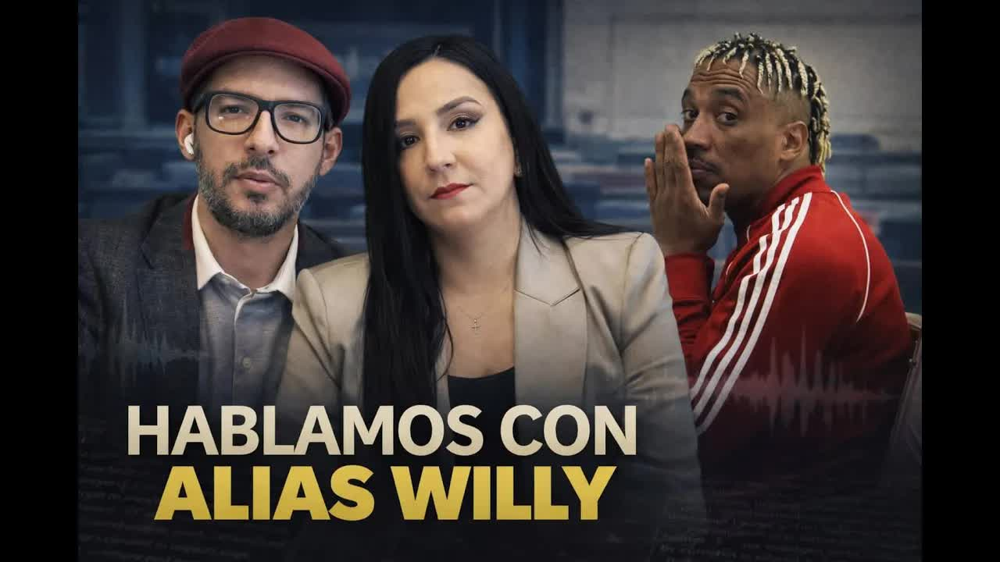
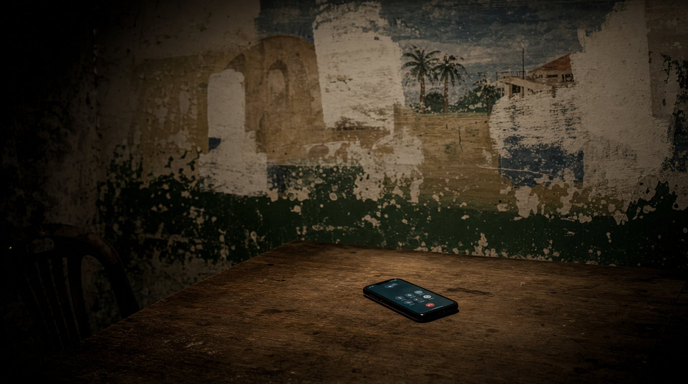
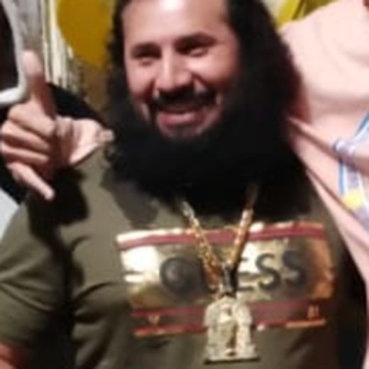

8 ene 2026 · Los audios de Willy
Yo no estoy pidiendo que hagan alianza, porque como Policía tienen que hacer su trabajo. Si nosotros robamos, métalos presos. Si nosotros matamos, métalos presos.
William Jofre Alcívar Bautista, alias Willy, presunto cabecilla de Los Tiguerones, fue capturado en Tarragona en octubre de 2024 con dos notificaciones rojas de Interpol. El 29 de diciembre de 2025 España lo dejó libre porque Ecuador no entregó las garantías que la Audiencia Nacional exigía para extraditarlo. Diez días después, Andersson Boscán y Mónica Velásquez publicaron una llamada que Willy les hizo hace un par de años. En ella describe pactos con el Gobierno de entonces para bajar las muertes los fines de semana, propone a la Policía un acuerdo para controlar la calle y dice que la comandante Tannya Varela se llevaba bien con Fito y con Junior Roldán.

William Jofre Alcívar Bautista nació en marzo de 1989. Se lo conoce como Negro Willy, W o Comandante Willy. Tiene 36 años. No empezó vendiendo droga en una esquina: consiguió un trabajo estable del Estado como agente de seguridad penitenciaria en la Penitenciaría del Litoral, en la década de 2010. Su tarea era mantener el orden en una de las cárceles más peligrosas del Ecuador.
Ahí conoció a Jorge Luis Zambrano, alias Rasquiña, el amo y señor de los pabellones. Como guardia, le consiguió prebendas y privilegios a Los Choneros y se convirtió en hombre de confianza de Rasquiña, a quien todavía llama, con cariño, el jefe. Rasquiña le dio acceso a un pabellón. En las cárceles ecuatorianas, dominar un pabellón es tener mil personas a disposición: hacen llamadas, amenazan y extorsionan por el líder, y le pagan una cuota semanal de entre 20 y 60 dólares. Quien no puede pagar termina vendiendo droga para la organización, y sus familias con él.
Para 2015 ya no era guardia sino preso, procesado por narcotráfico y asesinato. Su primer alias era Peladito. En 2019 un juez ecuatoriano lo liberó. Ese mismo año, el 27 de mayo, ocurrió una fuga masiva en la Penitenciaría del Litoral. Entre los fugados estaba Luis Ernesto Alcívar Bautista, alias La Puya, uno de sus hermanos. Las investigaciones han señalado siempre a Willy como uno de los responsables de esa fuga.
Alias Willy no era una persona, era una familia. El padre, William Jofre Alcívar, sentenciado a cinco años por delincuencia organizada. William, el primer hijo, presunto líder. Alex Iván, alias Ronco, segundo al mando, capturado también en España. Luis Ernesto, alias La Puya, coordinador de operaciones, que se cree está hoy al frente de la banda en Ecuador. Para 2024 Los Tiguerones controlaban territorios en Guayas y Esmeraldas, reclutaban menores desde los ocho años para la venta de droga y el sicariato, ejecutaron atentados con coches bomba y fueron vinculados a la toma de TC Televisión, cuyos atacantes recibían órdenes telefónicas de alguien que se hacía llamar La Firma, otro alias atribuido a Willy. La banda niega la toma. En enero de 2024 el Gobierno de Daniel Noboa incluyó a Los Tiguerones en la lista de las 22 organizaciones terroristas del Ecuador.
Fragmentos del programa del 8 de enero de 2026, en el minuto exacto en que se reprodujo cada parte de la llamada. El audio es el del programa: se oye a Willy y, encima, la conversación del estudio.
Hace un par de años Willy llamó a Andersson Boscán. Fue la única vez que conversaron por teléfono. Boscán y La Moni publicaron los fragmentos el 8 de enero de 2026, desde el asilo y sin romper la reserva de fuente. En la primera parte Willy habla de Esmeraldas como de una zona que le pertenece. Dice que la Policía se le armó en contra, que nadie ha querido conversar con él y que no pide una alianza, porque la Policía tiene que hacer su trabajo: si roban, que los metan presos; si matan, que los metan presos. Pero para el malandreo de la calle pide otra cosa.
Si vamos a hablar del malandreo, de las cosas de las calles, ayúdanos a controlar qué es lo que está pasando. Tienen que saber que nosotros tenemos el control de la ciudad.
Alias Willy, en la llamada publicada el 8 de enero de 2026
Willy se queja de Los Patones, una familia rival de Esmeraldas que, dice, al principio le lloraba para que no los mataran y que creció porque la Policía no los persigue. Casi toda su gente está presa, cuenta, pero conserva el control de los barrios y de una parte de la Ribera. Andersson Boscán lo resume así: cada vez que la Policía hace un operativo contra una banda, muy probablemente está limpiando el camino para la competencia. Por eso, dice, hay momentos en que la Policía se concentra en Los Choneros y beneficia a Los Lobos, o al revés.
La segunda parte es la más grave. Willy cuenta que desde el Gobierno nacional de entonces, el anterior a Daniel Noboa, llamaban a las bandas para pedirles que pararan la mano los fines de semana y que no hubiera muertos. Y que después mandaban el parte: cuatro muertos solamente en Guayaquil, bajó bastante, colabórenos, ayúdenos. Boscán recuerda que las estadísticas de 2023 muestran caídas inexplicables en algunos fines de semana, con dos o tres muertes, en un país donde hoy el promedio es de 28 asesinatos por día.
Mire el parte rutinario: cuatro muertos solamente en la ciudad de Guayaquil. Bajó bastante. Por favor, colabórenos ahí, ayúdenos.
Alias Willy, citando los mensajes que recibían del Gobierno, en la llamada publicada el 8 de enero de 2026
Luego pregunta por la jefa de la Policía, la mujer. Tannya Varela. Con ella, dice, hubo un enamoramiento con Los Tiguerones, porque se llevaba bien con Fito y con Junior. Cita lo que ella les habría dicho: que a Junior y a Fito los podía considerar por colaborarle en muchas cosas, pero que la ley era para todos y no podía demostrarle al otro equipo que quería atacarlos. Y recuerda el reclamo por los murales: a ellos les mandaban a borrarlos y a los Águilas y los Fatales no.
Yo no estoy pidiendo que hagan alianza, porque como Policía tienen que hacer su trabajo. Si nosotros robamos, métalos presos. Si nosotros matamos, métalos presos.
Pero si vamos a hablar del malandreo, de las cosas de las calles, ayúdanos a controlar qué es lo que está pasando. Tienen que saber que nosotros tenemos el control de la ciudad.
Toda mi gente casi está presa, y lo que tenemos controlados son todos los barrios y una parte de la Ribera.
Llamaban y decían: "Paren la mano este fin de semana, traten de que no haya muertos".
"Mire el parte rutinario: cuatro muertos solamente en la ciudad de Guayaquil. Bajó bastante. Por favor, colabórenos ahí, ayúdenos".
¿Cómo se llamaba la que estaba de jefa de Policía, la mujer?
Tannya Varela.
Ya, Varela. Un enamoramiento con los Tiguerones. ¿Por qué? Porque se llevaba bien con Fito, con Junior.
"Sabes que Junior, sabes que Fito, yo los puedo considerar por colaborarme muchas cosas, pero aquí la ley es para todos. No puedo demostrarle al otro equipo que los quiero atacar".
¿Por qué no borran todos los murales? ¿Por qué no borran los murales de los Águilas, los murales de los Fatales?
Las marcas de tiempo son estimadas según la extensión de cada fragmento; la duración real de la llamada y su fecha exacta no se revelaron. Los fragmentos se transcriben tal como se publicaron el 8 de enero de 2026, en el orden en que los presentó el programa.

Fito está extraditado. Junior Roldán está supuestamente muerto, con énfasis en el supuestamente. Tannya Varela es hoy conocida por el caso León de Troya, un proceso judicial en el que se la acusó de haber filtrado información que terminó protegiendo al narcotráfico, en especial a la mafia albanesa, y que fue archivado. Mónica Velásquez lo precisó al aire: Varela nunca ha sido acusada formalmente de corrupción o complicidad con bandas criminales, aunque su nombre lleva años sonando informalmente por el crimen organizado.
En octubre de 2024, en Tarragona, la Guardia Civil española, en coordinación con la Policía Nacional del Ecuador, llevaba meses rastreando a dos hermanos ecuatorianos en una urbanización de lujo. Eran Negro Willy y Ronco. Según BBC Mundo, llevaban más de un año en España, habían creado una empresa de transporte y encomiendas legalmente registrada, vivían en zonas residenciales caras, se movían en vehículos de alta gama y pagaban en efectivo en restaurantes de lujo.
Los descubrieron por cautelosos. Según un reportaje de El País atribuido a fuentes de la inteligencia española, los vecinos notaron que antes de salir verificaban tres, cuatro, cinco veces que no viniera nadie, que el carro daba dos o tres vueltas a la manzana y que en la autopista arrancaban a 140 o 145 kilómetros por hora para que nadie los siguiera. La Policía dio aviso a Interpol y encontró a dos de los más buscados del Ecuador, acusados de poner coches bomba.
El 23 de junio de 2025 la Audiencia Nacional de España declaró procedente la extradición a Ecuador con una condición: el país tenía tres meses para garantizar de forma efectiva la vida e integridad de Willy y la normalización de su sistema carcelario bajo los estándares de observación de la CIDH. Garantías reales, no más documentos judiciales, como precisó la resolución publicada el 17 de septiembre de 2025 por el Consejo General del Poder Judicial. Mientras Ecuador debía documentar eso, reportaba doce presos suicidados al mismo tiempo en una cárcel, decapitados en El Rodeo y fugas.
El plazo venció el 22 de diciembre y, según varios medios, entre ellos Ecuavisa, Ecuador no cumplió con la entrega. El 29 de diciembre de 2025 Willy recuperó la libertad. Hoy está en algún lugar de Europa, obligado a comparecer una vez por semana, con teléfono y con internet. Puede hacer llamadas como en el pasado. La Corte Nacional de Justicia dijo que hubo dos pedidos atendidos a tiempo; la Policía, que envió la información oportunamente a Cancillería; Cancillería, en un comunicado del 7 de enero, que sí envió la documentación. La Fiscalía de España sostiene que lo que pidió fueron garantías de que Willy no sería asesinado al llegar a una cárcel ecuatoriana.
No me intimidan las amenazas contra mi vida que me ha enviado. No nos intimidan las amenazas que está enviando contra el presidente de la República. Esa es la clase de criminal que tienen en el territorio español.
John Reimberg, ministro del Interior, 7 de enero de 2026, citado en el programa
El ministro del Interior, John Reimberg, reaccionó visiblemente molesto. Dijo que en junio de 2025 se pidió información y se envió toda la documentación, preguntó si los ciudadanos españoles quieren en su territorio a un criminal culpable de terrorismo, sicariato y narcotráfico, y aseguró que él y el presidente de la República han recibido amenazas de Willy.
Willy está libre en Europa. La extradición fracasó y Ecuador y España se pasan la pelota. Los audios muestran a un narcotraficante que reconoce abiertamente acuerdos con la Policía y con un Gobierno, acuerdos que incluían bajar las muertes para mejorar la estadística. Andersson Boscán lo dijo al cerrar: la consecución de estadísticas de la Policía, en ciertos momentos, ha venido de la mano de acuerdos que pasan por el crimen organizado, en gobiernos anteriores y, extraoficialmente, también en el actual.
La violencia no bajó. El día anterior a la publicación asesinaron a una persona en una vía transitada de Quito y hombres en camionetas con fusiles entraron a matar en la isla Mocolí, una zona residencial donde la gente se sentía segura. Por lo que Willy cuenta en la llamada no hay, hasta donde se dijo al aire, ninguna investigación abierta. Tannya Varela no ha sido acusada formalmente por nada de esto.
Actualizado el 5 de septiembre de 2026
Años después será guía penitenciario en la Penitenciaría del Litoral.
Conoce a Rasquiña en la cárcel; recibe el control de un pabellón.
Procesado por narcotráfico y asesinato.
Un juez ecuatoriano lo deja en libertad.
Escapa su hermano alias La Puya. Willy, señalado como responsable.
Órdenes telefónicas de "La Firma". Los Tiguerones niegan la toma.
El Gobierno de Noboa incluye a Los Tiguerones entre 22 organizaciones.
La Guardia Civil captura a Willy y a Ronco en una urbanización de lujo.
La Audiencia Nacional da tres meses a Ecuador para garantizar su vida.
Resolución del Consejo General del Poder Judicial: no más papeles, garantías verificables.
Según Ecuavisa y otros medios, Ecuador no entregó la documentación.
España lo deja en libertad con comparecencia semanal.
El ministro habla de amenazas; Cancillería dice que sí envió los documentos.
Boscán y La Moni publican la llamada de Willy.
Alias Willy, Negro Willy, W, Comandante Willy. Exguía penitenciario, presunto cabecilla de Los Tiguerones.
Comandante general de la Policía en la época de la llamada. Willy dice que se llevaba bien con Fito y Junior.
Ministro del Interior.
"El jefe". Hizo a Willy su hombre de confianza en la Penitenciaría.

Nombrado por Willy como cercano a Varela.
Nombrado por Willy junto a Fito.
Hermano de Willy, segundo al mando.
Hermano de Willy, coordinador de operaciones. Fugado en 2019.
Fotos vía Wikimedia Commons. Alias Fito: Penitenciaría (CC BY-SA 4.0).
En junio de 2025 se pidió información y se envió toda la documentación. Dijo que Willy lo ha amenazado a él y al presidente de la República, y que no lo intimidan.
En un comunicado del 7 de enero de 2026 aseguró que sí envió la documentación requerida por España.
La Corte dijo que hubo dos pedidos atendidos a tiempo; la Policía, que la información fue enviada oportunamente a Cancillería.
Sostiene que solicitó a Ecuador garantías de que Willy no sería asesinado al llegar a una cárcel ecuatoriana.
Han negado la toma de TC Televisión.
No consta una respuesta en el programa. Mónica Velásquez precisó que nunca ha sido acusada formalmente de corrupción o complicidad con bandas criminales.
A ver, ¿quién es alias Willy? ¿Cómo fue que llegó a ser uno de los narcoterroristas más buscados por la policía, acusado por la policía de espantosos crímenes, entre esos la toma de TC Televisión el 9 de enero del 2024? eh como así está en España, como así lo cogieron y con quién tenía relación eh la Policía Nacional a su juicio en una conversación que sostuvimos hace unos años. Esto y más te contamos enseguida. Buen…
Leer la transcripción completaTranscripciones de los subtítulos automáticos de cada programa. No están corregidas a mano: sirven para buscar una frase y llegar al minuto exacto del video, no como cita textual literal.
Willy comparece una vez por semana en Europa. Ecuador y España se culpan por la extradición fallida.
Nada de lo que Willy describe, los pactos con el Gobierno, con la Policía o la cercanía de Varela con Fito, tiene una investigación conocida.
El mapa de relaciones reproduce lo que Willy afirma en la llamada y lo que Andersson Boscán y Mónica Velásquez reportaron al aire a partir de fuentes policiales, judiciales y de prensa. Los fragmentos de audio se transcriben como mensajes atribuidos. La fecha exacta de la llamada no se reveló: los autores dijeron que fue hace un par de años.